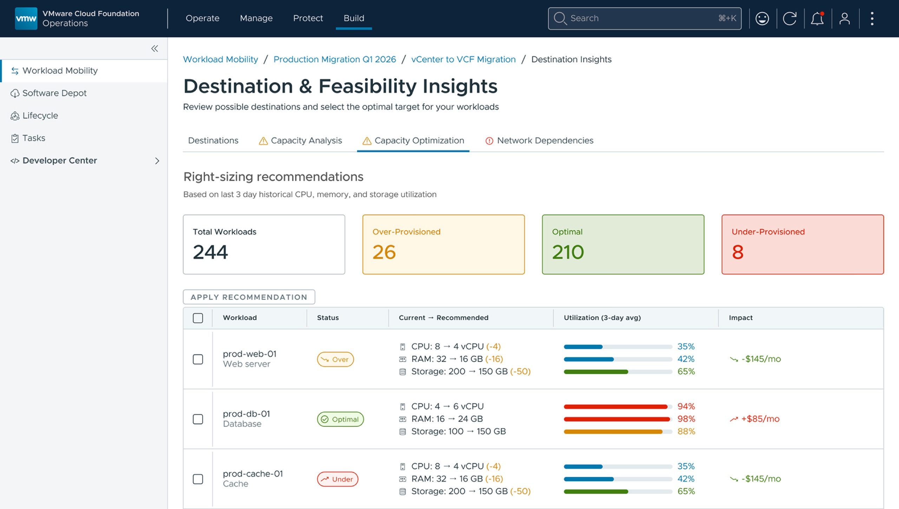
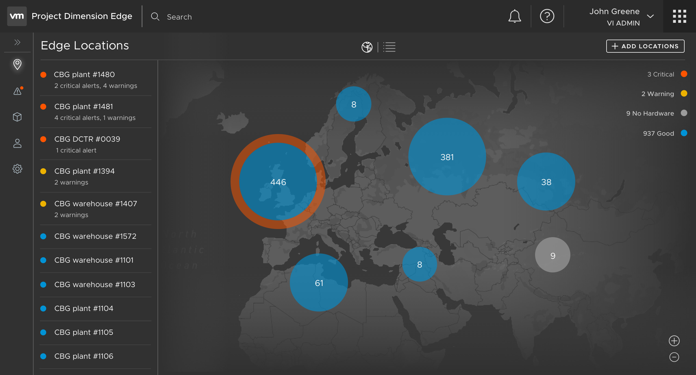
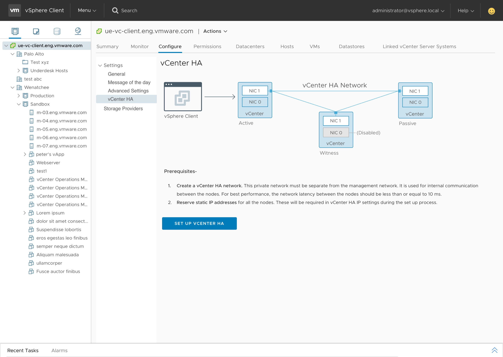
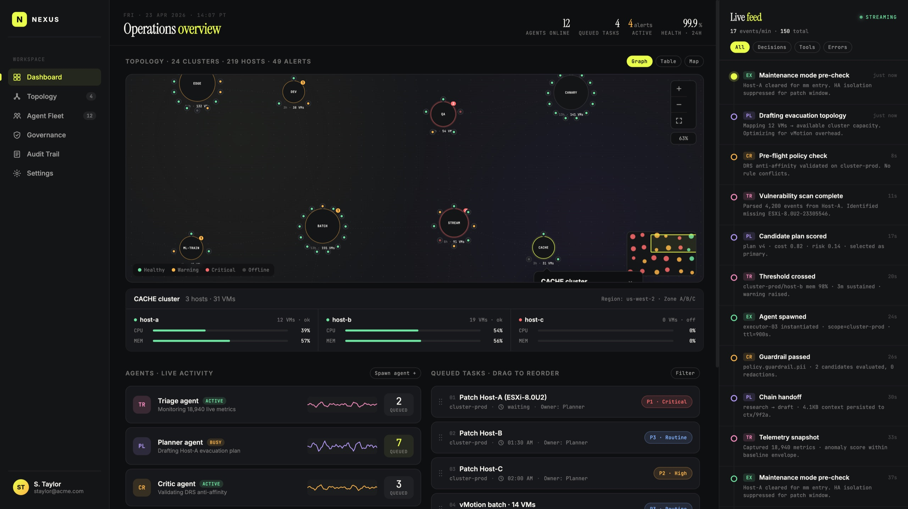
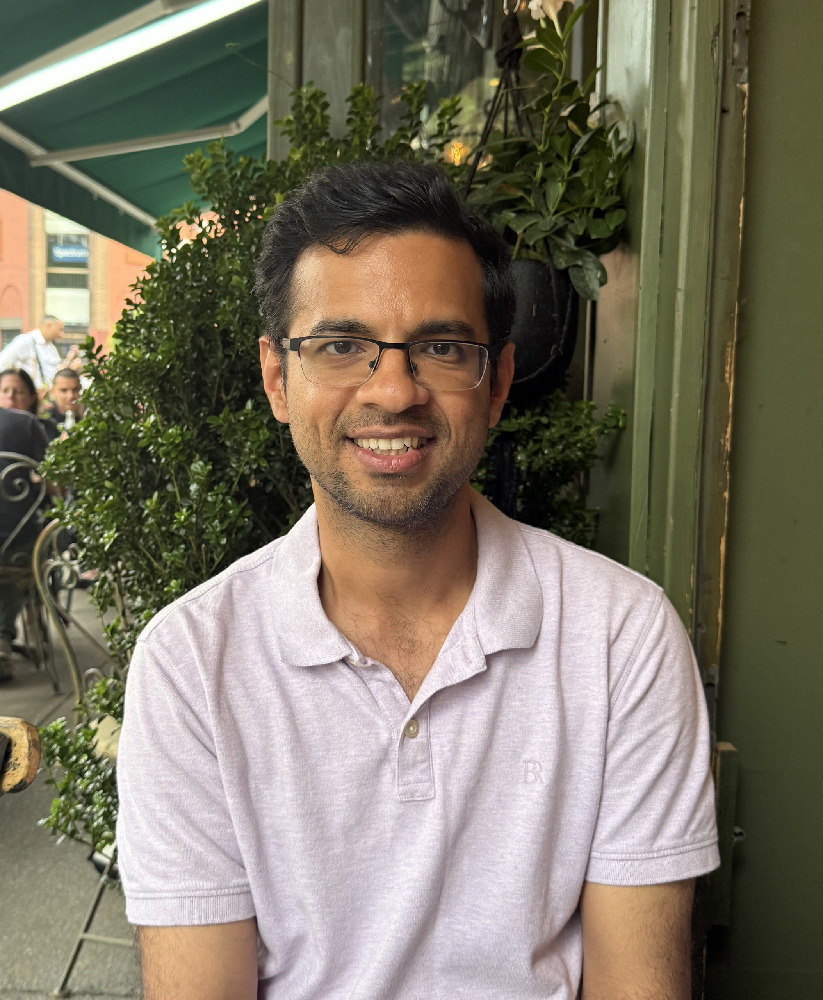

Twelve years specializing in 0-to-1 launches across hybrid cloud and infrastructure — and, lately, agentic AI — translating dense technical requirements into shipped products that scale to millions of administrators.





I'm a product designer with over twelve years in enterprise software, mostly cloud and infrastructure. I've designed tools for migration, procurement, observability, and configuration. The people I design for are IT admins who run large, complicated systems. My job is to make those systems easier to understand and use.
I started out in engineering, so I'm comfortable getting into the technical details with my team. I prototype early, and I run my own research sessions. Watching people use the product is how I figure out what to fix first.
Lately I've been exploring agentic AI through a self-initiated project, Nexus.
Outside work, I'm usually on a hiking trail, baking something new, or spending time with my family.